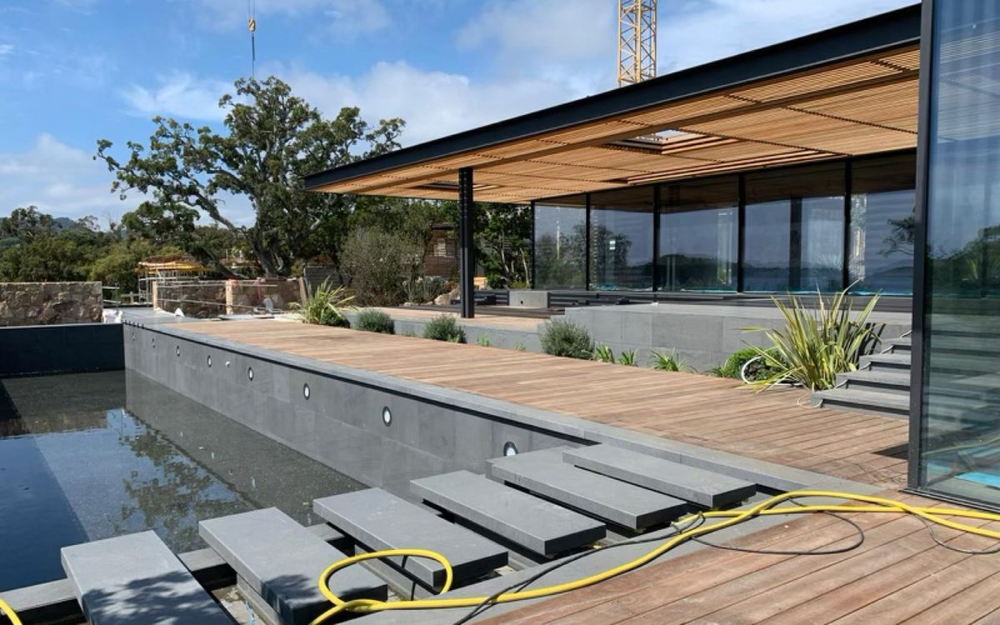
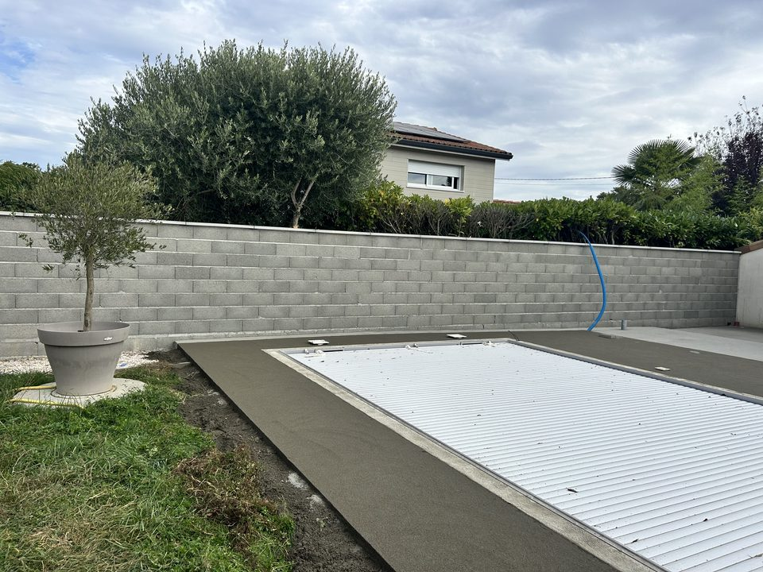
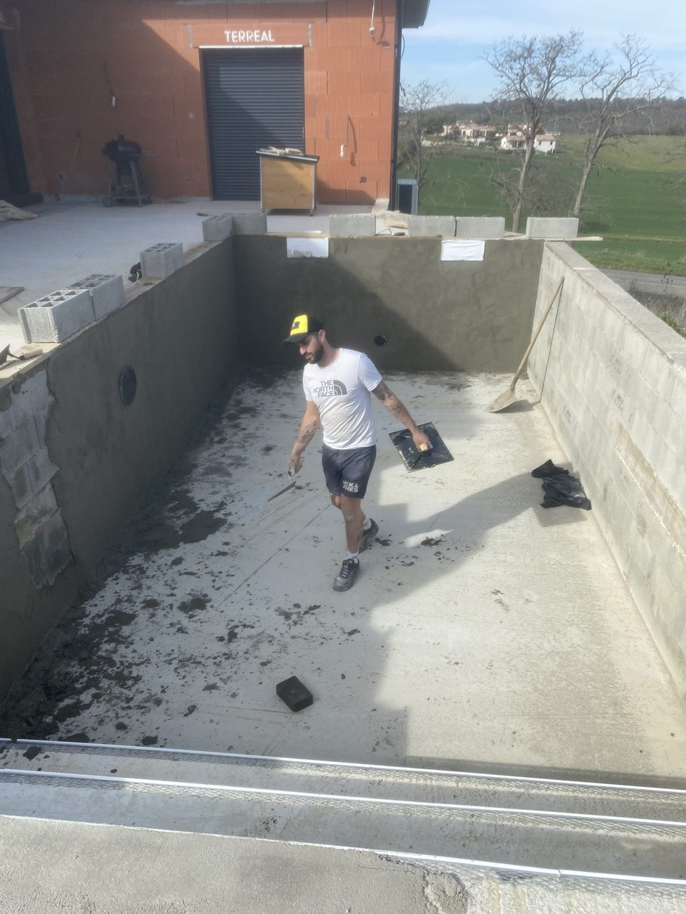

Accueil › Conseils › Terrasse en bois autour d'une piscine
Aménagement extérieur
Terrasse en bois autour d'une piscine : le prix et les pièges

La piscine est creusée, le liner est posé, et il reste une bande de terre autour du bassin. C'est le moment où le budget a déjà beaucoup servi et où la plage passe pour un détail de finition. Elle décide pourtant du confort d'usage, de la durée de vie du bois, et parfois de la conformité de votre installation.
Voici les chiffres du marché, les choix qui comptent au bord de l'eau, et les deux points réglementaires qui surprennent les propriétaires après coup.
Le support porte tout le reste
Autour d'un bassin, le sol a été remué, remblayé, tassé à la va-vite pendant le terrassement. Poser des lambourdes là-dessus revient à construire sur du mou : la plage se creuse au premier hiver et le niveau ne rattrape plus les margelles.
Deux solutions tiennent dans la durée. Une dalle béton coulée sur hérisson, qui coûte 30 à 50 € du m² de plus mais règle la question du tassement une bonne fois. Ou des plots réglables posés sur un support déjà sain, une chape existante par exemple, qui rattrapent les défauts de niveau et ménagent la lame d'air.
Cette lame d'air est le point que les poses économiques sacrifient en premier. Le NF DTU 51.4, document de référence des platelages extérieurs, demande une ventilation d'au moins 50 mm sous la structure. Une lambourde posée à plat sur le béton reste humide en permanence sous une plage arrosée dix fois par jour en juillet. Le bois pourrit par en dessous, là où personne ne regarde, et la terrasse lâche en cinq ans au lieu de vingt.
La pente compte autant. L'eau qui gicle du bassin doit partir vers le jardin, pas s'accumuler contre la maison ni retourner dans le skimmer avec le sable des pieds.

Le prix au m² d'une plage en bois
Les fourchettes ci-dessous correspondent au marché français en 2026. Elles servent à cadrer un budget, pas à remplacer un devis mesuré sur place.
| Poste | Prix au m² | Ce qu'il faut savoir |
|---|---|---|
| Bois européen (pin, douglas) | 60 à 80 € | Le ticket d'entrée. Traitement classe 4 obligatoire et saturateur annuel. |
| Composite (WPC) | 70 à 110 € | Aucun saturateur. Chauffe nettement plus sous le soleil du Sud-Ouest. |
| Bois exotique (cumaru, ipé, massaranduba) | 80 à 120 € | Le meilleur comportement au bord de l'eau. Le plus cher aussi. |
| Dalle béton en support | 30 à 50 € | Poste séparé, souvent absent des devis les moins chers. |
| Plage terminée, tout compris | 90 à 170 € | Préparation du sol, support, structure et pose des lames. |
Fourchettes relevées sur Travaux Avenue, septembre 2026. Ordres de grandeur nationaux, pas un tarif d'entreprise. Pour le détail poste par poste d'une terrasse classique, voir notre article sur le prix d'une terrasse en bois à Toulouse.
Pour une plage de 40 m² autour d'un bassin de 8 × 4, ça donne un budget qui va de 3 600 € en bois européen posé simplement à 6 800 € en exotique avec finitions. Le même périmètre, le même travail de pose, un rapport de un à deux sur la facture.
Ce qui gonfle la facture au bord d'un bassin
Une plage de piscine coûte plus cher au m² qu'une terrasse rectangulaire au fond du jardin, et ce n'est pas une question de marge.
- Le périmètre découpé. Une terrasse de 40 m² en un seul rectangle demande quelques coupes. La même surface en bande de 1,50 m qui fait le tour d'un bassin, c'est trois fois plus de longueur de coupe, plus de chutes, et des abouts à reprendre partout.
- Les margelles imposent le niveau. Elles sont déjà scellées et ne bougeront pas. Toute la structure se cale sur elles au millimètre, avec les plots à régler un par un.
- Le coffre de volet et le local technique. Un volet roulant hors sol, une trappe de visite, un coffre de filtration : chacun demande une découpe démontable, pas une lame vissée par-dessus. Le jour où la pompe lâche, la différence se voit.
- Les escaliers et emmarchements. Deux marches pour rattraper le niveau de la maison, c'est un ouvrage à part entière, avec ses limons et ses nez de marche.
- L'accès. Une piscine au fond d'un jardin clos où tout passe à la brouette se compte en journées d'homme, pas en mètres carrés.
Un devis qui tient en une ligne « plage bois 40 m² » ne vous permet de comparer strictement rien.
Quel bois résiste au chlore et au sel
Une plage de piscine subit un traitement que personne n'inflige à une terrasse ordinaire. Des projections chlorées plusieurs fois par jour tout l'été, un séchage complet en deux heures à 35 °C, puis un hiver humide où l'eau stagne si l'écoulement est mal pensé. Cette alternance mouillé-sec fatigue le bois plus vite que l'eau seule.
Les exotiques denses encaissent le mieux. Le cumaru, l'ipé et le massaranduba grisent lentement, se fendent peu et supportent le contact répété avec l'eau traitée. Le pin traité autoclave classe 4 reste jouable sur une plage bien ventilée et saturée chaque printemps, à condition d'accepter une durée de vie plus courte au bord immédiat du bassin. Le composite dispense du saturateur, ce qui séduit, au prix d'une surface qui chauffe sous le soleil toulousain. Sur une plage plein sud sans ombrage, ça se sent pieds nus dès la mi-juillet.
Un détail invisible pèse lourd sur la durée : les fixations. Autour d'un bassin au sel, les chlorures attaquent l'inox A2 courant et laissent des coulures noires autour de chaque vis au bout de deux saisons. L'inox A4, plus cher au kilo, tient la comparaison sans marquer le bois. Sur une plage de 40 m², l'écart de prix entre les deux se compte en dizaines d'euros. L'écart de résultat se voit à trois mètres.
Lisses ou rainurées : la question qui glisse
Beaucoup de propriétaires demandent des lames rainurées au bord d'une piscine, en pensant à l'adhérence. C'est le contraire qui se produit dans le temps.
Les rainures retiennent l'eau, le sable rapporté par les pieds et les dépôts verts de l'hiver. Après une saison, le fond des cannelures forme un film glissant que la brosse atteint mal. Une lame lisse, brossée deux fois par an, garde une surface plus sûre et se nettoie en un quart du temps.
L'adhérence réelle vient d'ailleurs : de la propreté du bois, du jeu entre les lames qui laisse filer l'eau, et de la pente qui l'éloigne du bassin. Le DTU prévoit un jeu de 3 à 7 mm selon l'humidité du bois au moment de la pose. Trop serré, l'eau stagne et le bois gonfle. Trop large, les orteils trouvent l'écart.

 Avant
Après
Avant
Après
Bassin et plage bois sur mesure — Castelnaudary (11)
La barrière, le piège de la plage surélevée
Depuis la loi du 3 janvier 2003, toute piscine enterrée ou semi-enterrée, non close et à usage privatif, doit être équipée d'au moins un dispositif de sécurité normalisé : barrière NF P90-306, alarme NF P90-307, couverture NF P90-308 ou abri NF P90-309. L'amende encourue par le propriétaire monte à 45 000 €, au titre de l'article L183-13 du code de la construction et de l'habitation.
Voici où la plage entre en jeu. La norme NF P90-306 exige une barrière d'au moins 1,10 m de haut, mesurée depuis le sol ou depuis la plage. Surélever la plage de 30 cm pour rattraper le niveau de la maison rabaisse d'autant la hauteur utile de la barrière posée avant les travaux. Une clôture conforme au printemps peut cesser de l'être une fois les lames vissées.
Le même raisonnement vaut pour les autres dispositifs. Une couverture de sécurité doit rester manœuvrable et s'ancrer sur un support solide : si la nouvelle plage recouvre les points de fixation, la couverture ne protège plus rien. Ce contrôle se fait au moment du plan de calepinage, avant de commander le bois, jamais le dernier jour de chantier.
Mairie, taxes et déclarations
Pour la plage seule, la règle rejoint celle de n'importe quelle terrasse. De plain-pied et sans emprise au sol, elle échappe en général à toute formalité. Surélevée ou posée sur une structure porteuse, elle relève d'une déclaration préalable de travaux. Les seuils dépendent du plan local d'urbanisme, et ils varient réellement d'une commune à l'autre dans l'agglomération toulousaine.
Le bassin, lui, suit son propre régime, détaillé sur Service-public.fr : déclaration préalable au-delà d'une certaine surface, permis de construire pour les grands bassins, et déclaration aux impôts dans les 90 jours suivant la fin des travaux.
Côté fiscalité, la taxe d'aménagement porte sur le bassin, pas sur le platelage. Elle se calcule à partir d'une valeur forfaitaire fixée à 251 € du m² de bassin pour 2026, multipliée par les taux communal et départemental. Une plage de plain-pied ne crée pas de surface taxable, ce qui explique qu'elle passe souvent sous le radar des simulateurs en ligne.
L'entretien d'une plage de piscine
Le programme se résume à trois gestes. Un rinçage à l'eau claire après les grosses journées de baignade, qui évacue le chlore et le sel avant qu'ils ne sèchent sur le bois. Un brossage dans le sens des fibres au printemps, avec une brosse dure et de l'eau. Un saturateur une fois par an sur les essences qui en demandent, appliqué sur bois sec et propre.
À l'automne, dégagez les feuilles coincées dans les jeux entre lames. Une plage bien posée évacue l'eau par ces fentes ; bouchées, elles la retiennent sur les abouts, la partie du bois qui boit le plus vite.
Rangez le nettoyeur haute pression, ou tenez-le loin et à faible pression. À bout portant, la lance creuse les fibres tendres, laisse une surface pelucheuse qui retient l'eau, et accélère le grisaillement qu'elle était censée corriger. Sur une plage déjà noircie, un dégriseur suivi d'un saturateur rend sa teinte au bois, tant qu'il reste sain en profondeur.

Questions fréquentes
Quel est le prix d'une plage de piscine en bois au m² ?
Entre 90 et 170 € du m² tout compris, préparation du sol et support inclus. La fourniture seule va de 60 à 80 € en bois européen, 80 à 120 € en exotique, 70 à 110 € en composite. Une dalle béton à couler ajoute 30 à 50 € du m².
Quel bois choisir autour d'une piscine ?
Le cumaru, l'ipé et le massaranduba pour leur tenue au contact de l'eau traitée. Le pin autoclave classe 4 pour le budget, sur une plage bien ventilée et saturée chaque année. Le composite si vous ne voulez plus jamais toucher un pinceau, en sachant qu'il chauffe davantage en plein soleil.
Lames lisses ou rainurées au bord de l'eau ?
Lisses. Les rainures retiennent l'eau, le sable et le vert, ce qui rend la plage plus glissante après une saison. L'adhérence vient de la propreté du bois et de l'écoulement de l'eau, pas du profil de la lame.
Ma barrière de sécurité reste-t-elle conforme après les travaux ?
Pas forcément. La hauteur de 1,10 m de la norme NF P90-306 se mesure depuis la plage. Surélever le niveau de 30 cm ampute d'autant la hauteur utile de la barrière. Ce point se vérifie avant la pose, au moment du calepinage.
Peut-on poser une plage bois sur une dalle béton existante ?
Oui, et c'est la configuration la plus simple si la dalle est saine. Les lambourdes viennent sur plots réglables qui rattrapent les défauts de niveau et ménagent la ventilation. Un contact direct entre lambourde et béton, sans lame d'air, condamne le bois à moyen terme.
Intervenez-vous en dehors de Toulouse ?
Oui. Nous sommes basés à Tournefeuille et nous intervenons sur tout l'ouest toulousain, mais aussi sur des chantiers plus éloignés : Merville, Pujaudran, Saint-Orens-de-Gameville, Pompertuzat, et jusqu'à Castelnaudary pour des rénovations complètes.